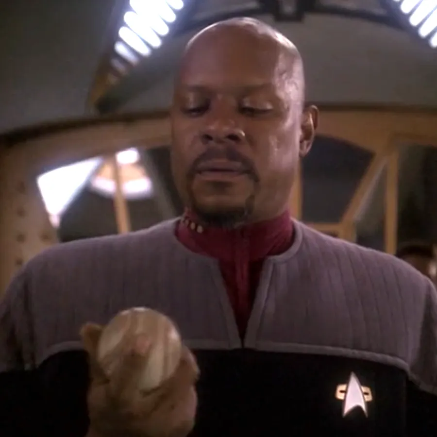
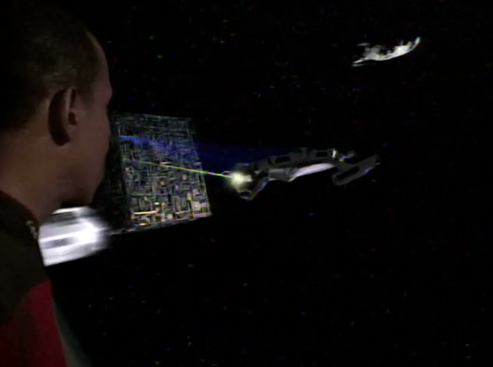
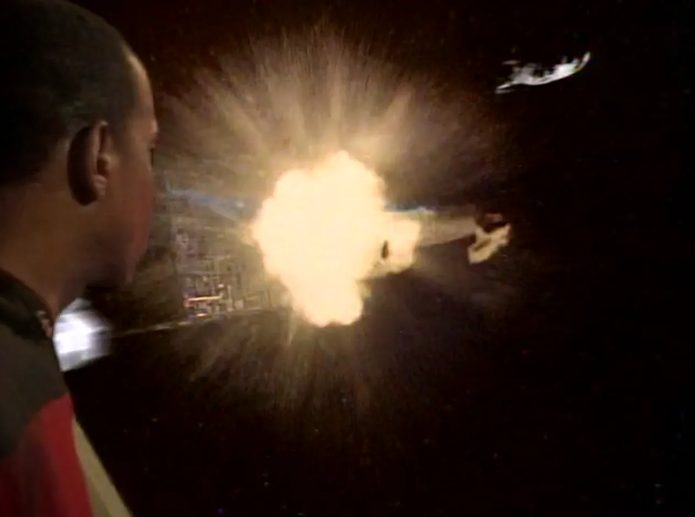
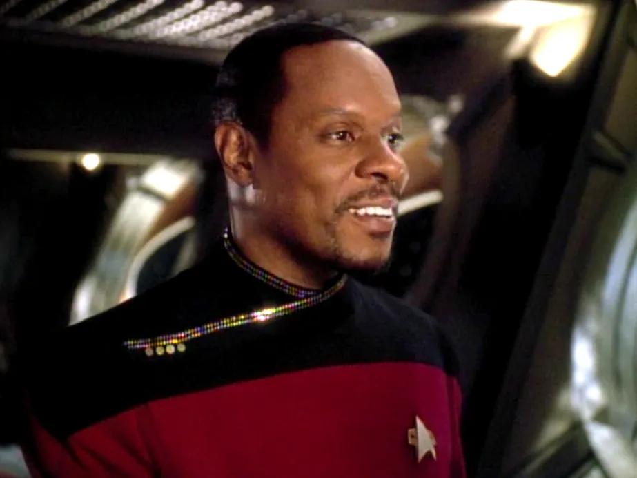
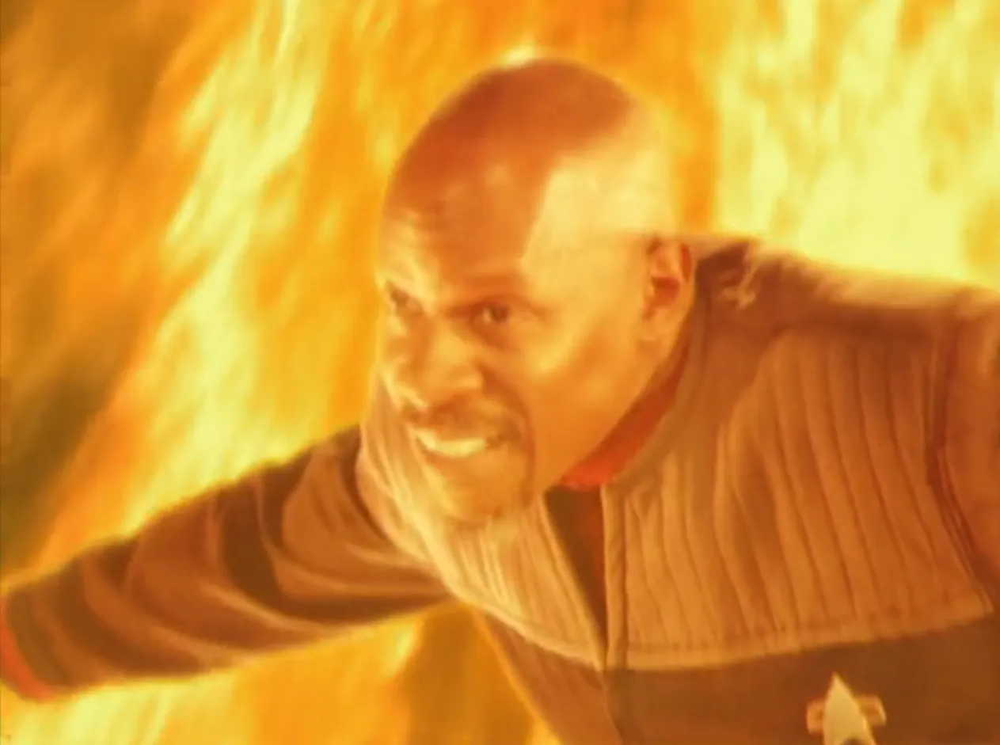

@c6reviews.
@c6reviews.| Benjamin Lafayette Sisko | |
|---|---|
 |
|
| Played by: | Avery Brooks |
| Primary Series: |  Seasons 1-7 |
Early Life
Ben Sisko born
Benjamin Lafayette Sisko is born in New Orleans, to Joseph and Sarah Sisko.
2334–2348
(15 years)
(15 years)
Sisko joins Starfleet Academy
Sisko age 20
Sisko graduates from the Academy and meets Jennifer
While waiting for his first assignment after graduation, Ben Sisko met Jennifer at Gilgo Beach. The two fell in love and were married.
Jake Sisko is born
Jennifer gives birth to her and Benjamin's only child, Jake Sisko.
2356–2365
(10 years)
(10 years)


Battle at Wolf 359
While serving as first officer aboard the USS Saratoga, the ship was called to duty at Wolf 359 to defend Earth from a Borg attack. When the ship was badly damaged, Benjamin and his son, Jake, were able to escape, but Jennifer was killed in the attack. Ben had no choice but to leave her body behind and watch as the Borg destroyed the vessel.
Service on Deep Space Nine
Sisko takes command of station Deep Space Nine in orbit of Bajor
Benjamin, along with his son, moves to the station to assist the Bajoran people and the provisional government to recover after 50 years of occupation by the Cardassians. Early in his tenure, the religious leader of Bajor, known as the Kai, told Sisko that he was the Emissary of the Prophets, a religious icon that was prophesied in sacred texts. Sisko was not comfortable with this title for some time.DS9 1x01/02: Emissary
Sisko contends with the Maquis
After a new Federation-Cardassian treaty left several Federation colonies on the wrong side of the border, Sisko must try to keep the peace when a resistance group called the Maquis starts to cause trouble.DS9 2x20 & 2x21: The Maquis

Sisko promoted to Captain
Shortly after being promoted to captain, Ben Sisko foils a plot by the changelings to start a Federation war with the Tzenkethi.DS9 3x26: The Adversary
Sisko age 40
Sisko discovers the lost city of B'hala
Having finally become more comfortable with the title of Emissary, Sisko manages to unlock the secrets of an ancient riddle, leading to the discovery of the lost city of B'hala on Bajor.DS9 5x10: Rapture
Sisko brings the Romulans into the Dominion War, begins invasion of Cardassian space
After a series of morally-dubious actions, Sisko must contend with his own conscience even though he was successful in bringing the Romulans in on the war, which was a critical infusion of force on their side. Pitted against the Cardassians which had allied themselves with the Dominion, Sisko began an invasion into enemy territory later this year.DS9 6x19: In the Pale Moonlight
DS9 6x26: Tears of the Prophets

Sisko confronts the Pah-Wraiths in the Bajoran Fire Caves
After learning that his mother was inhabited by one of the Prophets, Ben Sisko's path becomes all too clear to him. He fights wars on two fronts: the literal war with the Dominion, and the spiritual war with the Pah-Wraiths. In one final battle, Sisko confronts the Pah-Wraiths and their vessel, Gul Dukat. Sisko is successful in keeping the Pah-Wraiths trapped in their prison in the fire caves, sacrificing his own soul in the process. The Prophets welcome Ben into the Celestial Temple to exist alongside them in the wormhole.DS9 7x25: What You Leave Behind